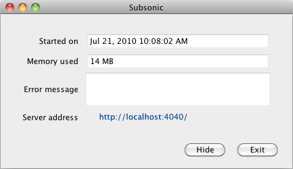
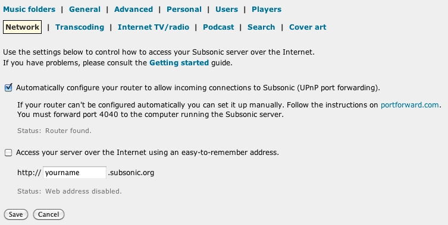
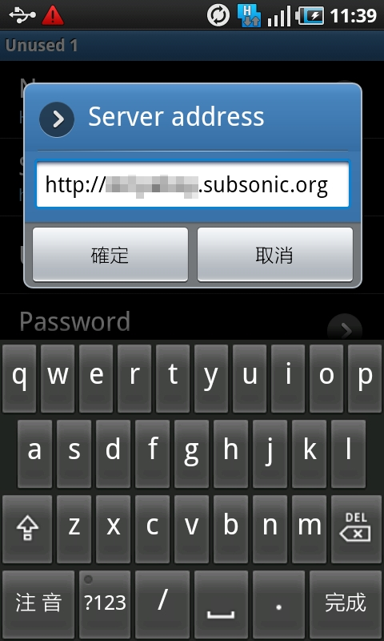

感謝您對「自由軟體鑄造場」的支持與愛護，十多年來「自由軟體鑄造場」受中央研究院支持，並在資訊科學研究所以及資訊科技創新研究中心執行，現已完成階段性的任務。 本網站預計持續維運至 2021年底，網站內容基本上不會再更動。
也紀念我們永遠的朋友 李士傑先生（Shih-Chieh Ilya Li）。
也紀念我們永遠的朋友 李士傑先生（Shih-Chieh Ilya Li）。
在戶外盡享家中音樂庫：Subsonic
建立日期 2010-08-02 22:23 最近更新在 2010-08-27 17:51
如今智慧型手機都內置能播放音樂檔案的媒體播放器，再加上能兼容最大容量達 32GB 的 microSD 記憶卡，已逐漸取代 MP3 隨身聽機種，成為樂迷戶外聽音樂的裝置了。可是，如果樂迷所珍藏的音樂檔案太多，要選擇將哪些音樂放入手機的記憶卡裡，相信也不會是一件容易的事。然而，如果樂迷有申請無限 3G 行動上網，家中亦有寬頻上網服務的話，則大可以在家中儲存大量音樂檔案的電腦裡，安裝一個名為 "Subsonic" 的自由軟體，這個軟體能夠將樂迷家中的電腦變成「音樂伺服器」，這樣樂迷即使不在家中，也可以利用能上網的辦公室電腦或是智慧型手機，隨時享受自己家中的音樂珍藏了。 Subsonic 目前最新版本為 4.x，程式本身以開放原始碼的方式對外散布，並支援 Windows、Mac OS X 及 GNU/Linux 三大作業平台。下文筆者會以 Subsonic 4.0.1 的 Mac OS X 版本作為示範平台。
軟體名稱：Subsonic
最新版本：4.0.1
軟體授權：GNU General Public License （GPLv3）
系統支援：Windows、Mac OS X、GNU/Linux
官方網站：https://www.subsonic.org/
將 Subsonic 安裝到電腦後，樂迷還要完成三個步驟：「設定登入資料」、「設定音樂文件夾」以及「設定網路連接」，才能在戶外透過 Subsonic 播放家中的音樂珍藏。
設定 Subsonic 軟體的登入資料
執行 Subsonic 軟體後，彈出來的 Subsonic 視窗只會顯示啟動該軟體的時間、所佔系統的記憶體，以及一個伺服器網址：https://localhost:4040/。原來 Subsonic 所有設定都要透過網頁瀏覽器來進行。先按〔Hide〕將 Subsonic 視窗收起來。

然後，打開網頁瀏覽器，並輸入網址 https://localhost:4040/，網頁瀏覽器便會顯示 Subsonic 的服務登入畫面。這個畫面會提醒樂迷要更改登入密碼。首次使用 Subsonic，在登入畫面中「用戶名」（Username）及「密碼」（Password）兩欄都填上「admin」，然後按〔登錄〕（Log in）。
進入 Subsonic 服務的首頁，會提醒樂迷先要完成上述的三大步驟。首先要更改「admin」的登入密碼，點擊「Change administrator password」連結以繼續。
瀏覽器會顯示 Subsonic 的用戶設置介面，確保「Select user」一欄為「admin」，然後勾選「change password」核取方塊，再在「New password」及「Confirm password」兩欄都輸入同一個自選的密碼。最後按〔保存〕（Save）。
這樣便完成了「admin」戶口的設定。如果樂迷有需要增加更多戶口，此時可以填入新戶口的用戶名及自選密碼，否則可按〔Cancel〕離開用戶設置介面。
此時樂迷需要重新登入 Subsonic 服務，在登入畫面中「用戶名」輸入「admin」，「密碼」一欄填上剛才設定的新密碼，然後按〔登錄〕便可重新登入服務。
設定音樂文件夾
下一步就是設定 Subsonic 的「音樂文件夾」，這個程序是要告訴 Subsonic 軟體：自己的音樂珍藏是儲存在電腦硬碟的哪個位置。按一下 Subsonic 服務畫面上方的「設置」（Settings），預設便進入「音樂文件夾」的設置介面。
樂迷在設置介面第一行的「Folder」欄，填上自己儲存音樂的資料夾在電腦硬碟的路徑，「Name」一欄則可填上樂迷自選的名字。樂迷可設定多過一個音樂文件夾，不過要使用這些音樂文件夾，記得在項目中勾選「Enabled」核取方塊。完成設定後，按一下〔保存〕，如無意外，Subsonic 服務網頁的左方便會出現來自音樂文件夾所有音樂檔案的「目錄」，「目錄」中的項目以音樂文件夾裡的子資料夾為主。
樂迷點選網頁左方目錄其中一個項目，便自動進入「播放」（Play）介面，網頁中央便會出現所選子資料夾的所有歌曲項目。
樂迷可點選「Play all」或「Play random」，Subsonic 網頁便會以順序或亂序的方式，播放所選子資料夾的所有歌曲項目。樂迷亦可按歌曲項目中的〔+〕，將這個歌曲項目放入下方的「播放列表」（Playlist）。（要留意的是，要令 Subsonic 網頁能夠播放音樂，必須先安裝 Adobe Flash Player。）
在播放音樂時，網頁右方亦會顯示有哪些用戶正在連接 Subsonic 伺服器，聆聽哪一首音樂等資料。
設定網絡連接
雖然樂迷已可透過 Subsonic 網頁，在家播放音樂珍藏，但為了遠端聆聽這些樂曲，樂迷還要調整 Subsonic 與家中的路由器之間的存取設定，這樣樂迷才能在戶外使用家中 Subsonic 的服務。按一下 Subsonic 服務畫面上方的「設置」，再點選設置介面當中的「Network」，便可進入網路的設置介面。
勾選網路設置介面當中第一個核取方塊，Subsonic 便會嘗試自行設定樂迷家中的路由器，開放連接埠 4040 以接受外來的 Subsonic 服務登入要求。不過有時樂迷亦有可能需要手動調整路由器的設定，才能在戶外成功連接家中的 Subsonic 服務。

此外，樂迷可以視需求勾選第二個核取方塊，以取得由 Subsonic 提供的易記網址，如此一來，樂迷在戶外輸入這個易記網址，便可以連接家中 Subsonic 服務，而毋須輸入長串複雜難記的 IP 位址了。樂迷勾選第二個核取方塊後，記得在本來填上「yourname」的欄位，改填自選的名字，然後再按〔保存〕。
如無意外，「yourname」欄位下方會顯示易記網址的申請及運作是否成功，不過亦有一行紅字，提醒樂迷這個易記網址服務只能免費試用 30 天，之後樂迷要作出捐獻，才能繼續使用這個易記網址服務。
設定完畢後，樂迷在住家以外的網路環境，便可透過能連接網路的電腦，開啟網頁瀏覽器輸入先前登記的易記網址或電腦的 IP 位址，便可以登入家中 Subsonic 服務，隨時播放自己家中的音樂珍藏了。
安裝 Android 手機軟體
樂迷除了可以透過辦公室電腦，亦可以透過具有上網功能的智慧型手機來使用家中的 Subsonic 服務。目前以智慧型手機存取 Subsonic 音樂庫的智慧型手機方案，主要支援 iPhone 及 Android 兩大手機系統。不過，適用於 iPhone 智慧型手機的 Subsonic 軟體並非官方軟體，而且亦需要付費購買。至於適用於 Android 手機的 Subsonic 軟體則由 Subsonic 的原作者 Sindre Mehus 所自行開發，並且能夠讓樂迷免費下載及使用。因此，以下筆者集中介紹 Subsonic 於 Android 平台下的應用軟體。
軟體名稱：Subsonic for Android
最新版本：1.5
軟體授權：GNU General Public License（GPLv3）
系統支援：Android
官方網站：https://www.subsonic.org/
樂迷透過 Subsonic 官方網站所下載的 Android 軟體為 APK 檔案，透過 Android 手機中的檔案總管開啟 APK 檔案，便可選擇將軟體安裝至 Android 手機。不過，事前樂迷要確保 Android 手機【設定】中的【應用程式】介面，當中「未知的來源」的核取方塊已勾選。
執行 Subsonic 的 Android 軟體後，會見到如下圖的操作介面。預設伺服器是 Subsonic 設立的示範伺服器，樂迷即使未設定家中的 Subsonic 伺服器，仍可透過示範伺服器，試用 Android 版本的 Subsonic 軟體。
樂迷要設定 Android 版本的 Subsonic 軟體連接家中的伺服器，可點選主頁中的「Settings」，再點選尚未設定的伺服器項目，例如「Unused 1」。
這樣便進入「Unused 1」伺服器的設定介面。
樂迷可點選「Name」項目，為伺服器設定一個自選的名稱。
再點選「Server address」，填上較早前設定的易記網址。

再填上登入伺服器的用戶名及密碼，然後可點一下「Test connection」，測試一下手機能否連接家中的伺服器。
如無意外，手機畫面會出現已成功連接伺服器的訊息，樂迷此時便可按手機的返回鍵退出設定介面了。
回到 Subsonic 主頁，再點選「Select server」，點選剛才新增的伺服器項目。
再點一下 Android 軟體介面下方左起第二個圖示，軟體便會連接家中的 Subsonic 伺服器，並顯示家中音樂文件夾裡的所有子資料夾。
樂迷點選其中一個項目，畫面便會出現所選子資料夾的所有歌曲項目。
樂迷可點選「Select all」，選擇播放所選子資料夾的所有歌曲項目，亦可逐個勾選歌曲項目，以將這個歌曲項目放入「播放列表」。
再點一下〔Play〕，軟體便會自動透過伺服器取得所選的音樂檔案，並且播放出來。
在播放介面中點一下「播放列表」圖示（即專輯插圖下方最右邊的圖示），畫面便會顯示播放列表。而為了令播放效果更為流暢，Subsonic 的 Android 軟體也會自動下載所有播放列表中的音樂檔案，並儲存於手機記憶體裡。
Subsonic 的 Android 軟體亦支援背景音樂播放功能，透過 Android 畫面上方的【進行中】列表，便可隨時返回 Subsonic 的播放介面。
最後容許筆者再贅言幾句地提醒樂迷們：透過智慧型手機使用 Subsonic 軟體需要連接網路，很可能需使用到較大的資料傳輸量，因此建議樂迷必須先申請無限 3G 行動上網的服務，若不然、屆時可能就得付出龐大的 3G 上網費用了。
專欄總覽


自由軟體鑄造場 製作 最佳瀏覽狀態：IE7或Firefox2.0以上 (建議使用Firefox) ‧ 解析度1024*768
E-Mail：contact@openfoundry.org Address：台北市南港區研究院路2段128號 中央研究院資訊科學研究所 . 隱私權條款. 使用條款
E-Mail：contact@openfoundry.org Address：台北市南港區研究院路2段128號 中央研究院資訊科學研究所 . 隱私權條款. 使用條款